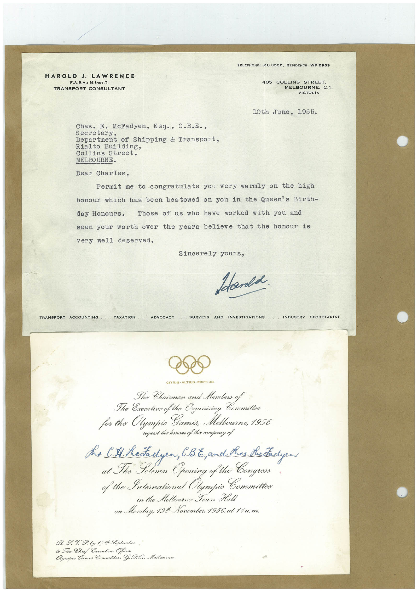

Book 1 · scan 141


Description
Transcription
Context
Review notes
Compare the machine draft with the scan. Handwriting and names need human review.
Artifacts
Edit the artifacts field in this note’s frontmatter to change these records. This summary is generated.
B01-S141-A01 — Letter & Invitation — Book 1, scan 141
Types: Typed document, Letter, Invitation
Scope: Whole scanned page; individual items can be split out during review.
Caption: Not mapped yet.
Caption source: Not recorded yet.
Caption status: unmapped
Machine transcription
HAROLD J. LAWRENCE F.A.S.A.; M.INST.T. TRANSPORT CONSULTANT TELEPHONE: MU 3552: RESIDENCE. WF 2969 405 COLLINS STREET. MELBOURNE. C.1. VICTORIA 10th June, 1955. Chas. E. McFadyen, Esq., C.B.E., Secretary, Department of Shipping & Transport, Rialto Building, Collins Street, MELBOURNE• Dear Charles, Permit me to congratulate you very warmly on the high honour which has been bestowed on you in the Queen's Birth- day Honours. Those of us who have worked with you and seen your worth over the years believe that the honour is very well deserved. Sincerely yours, Stands TRANSPORT ACCOUNIING ••• LAXATION •ADVOGACY SURVEYS AND INVESTIGATIONS INDUSTRY SECRETARIAT CITIUS • ALTIUS • FORTIUS The Chairman and Members of The Oxecutive of the Organising for the Olympic Games, Melbourne, 1956 request the honour of the company of Ms. CS Metadyen, C.%, and thas Shetadyew at The Solemn Opening of the Congross f the International Olympic Committee in the Melbourne Sown Halt on Monduy, 191 November, 1956, at 11a.m. R. I.% I. by 17 t Soptember, to The Chief Executive Officer Olympic Games Committee, G. P.O.. Melbourne